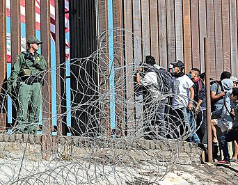

Fernsehen
TVThek
Radio
Debatte
Österreich
Wetter
Sport
News
ORF.at im Überblick
Vorarlberg
Tirol
Kärnten
Steiermark
Oberösterreich
Niederösterreich
Wien
Burgenland

INLAND
EX-ÖVP-Chef Mitterlehner in Wahlkampfvideo der SPÖ
ÖVP-Hackerangriff: Ermittlungen laufen, Regierung schweigsam
Sondersitzung im Nationalrat zieht Themen vor
BUWOG-Prozess: Grasser verweist auf Heider und andere
Umfrage: Vierzig Prozent sehen Demokratie in Gefahr